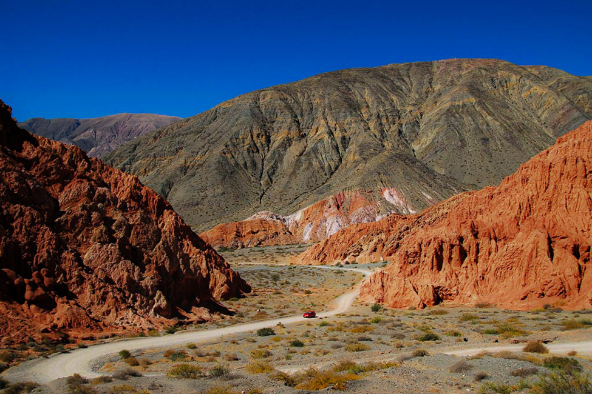

Yungas
¿Qué son las Yungas de Jujuy?
Selva en Jujuy. El recorrido norteño que muy pocos conocen ...
La yunga es una Reserva de Biosfera de 1,3 millones de hectáreas de selva, bosque, pastizales y
cultivos. Un ambiente que desborda biodiversidad y que es zona de vida y producción para muchas
comunidades.

Quebrada de Humahuaca
¿Qué es una quebrada y sus características?
El término quebrada hace referencia a una morfología del terreno, típicamente erosionado por las
aguas de escorrentía, debido a la ausencia de cubiertas vegetales, que se transforman en valles
separados por camellones en forma de hoja de cuchillo que toman disposiciones ordenadas en forma de
espina de pescado, similar.

Puna
¿Qué características tiene la Puna Argentina?
La región de la Puna se define por su clima continental seco donde las precipitaciones son escasas
(entre 200 y 500 mm anuales), los vientos son frecuentes y de variable intensidad, las temperaturas
son frescas o frías todo el año, la oscilación térmica es muy grande, entre 25 y 40 ºC entre el mes
más frío

Valles
¿Cómo son los valles de Jujuy?
Estos valles poseen clima templado y temperaturas moderadas todo el año que oscilan entre los 10°C y
los 25°C de promedio anual, aunque en invierno los días fríos bajan los valores produciendo heladas
y nevadas frecuentes en las altas cumbres.